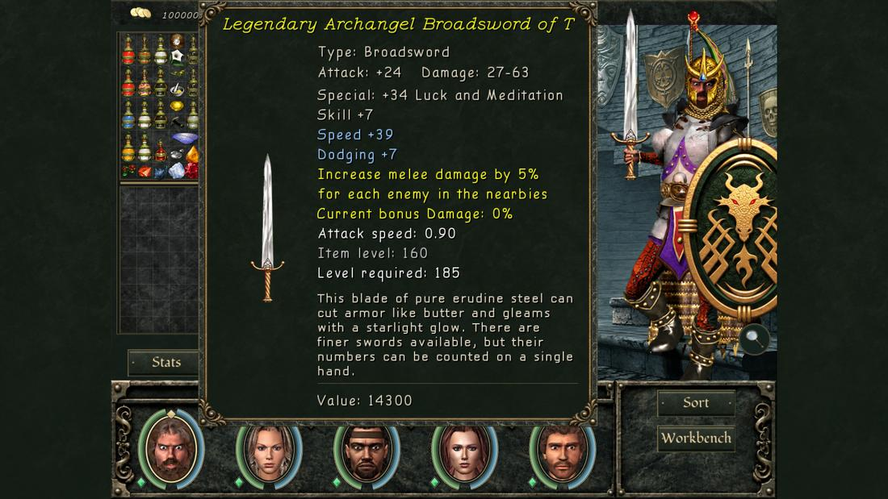
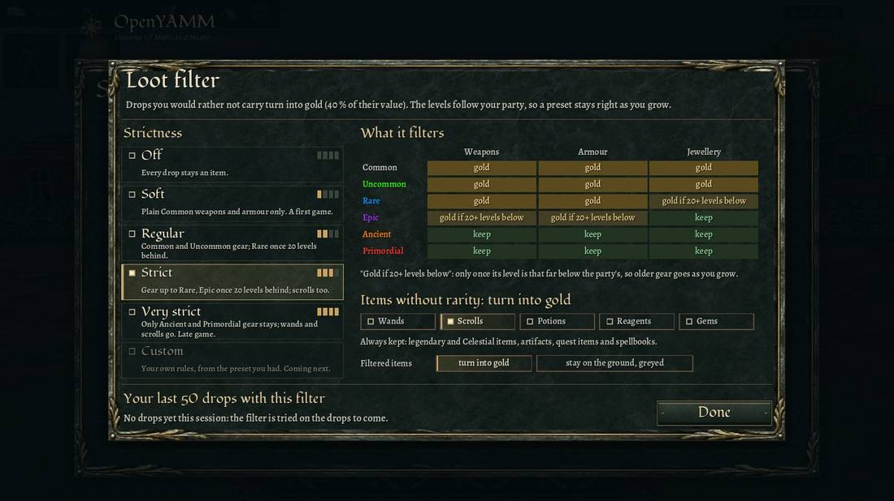

Every weapon, armour piece and jewel a monster drops is rolled fresh: a rarity, an item level, enchantments and sometimes a legendary power. The name and the bag glow show the rarity colour (hold Left Alt).
| Rarity | Colour | Enchantments | Strength | Item power | Also |
|---|---|---|---|---|---|
| Common | white | none | — | 60–100 % | |
| Uncommon | green | 1 | 40–100 % | 60–100 % | |
| Rare | blue | 2 | 40–100 % | 60–100 % | |
| Epic | purple | 2 base + 1 special | 40–100 % | 60–100 % | |
| Ancient | orange | 3 | 100–125 % | 100–120 % | at least +2 item power |
| Primordial | red | 3 | 125 % | 120 % | perfect roll, at least +4 item power |
| Legendary | yellow | 3 | 80–100 % | 80–100 % | a legendary power |
| Celestial | cyan | 3 | 125 % | 120 % | perfect roll and a legendary power; grows with the wearer |
Your own level does not count: farming weak monsters gives weak loot. Rarity odds stop improving at tier 20 (about monster level 300); the enchantment ceiling, 1 + 2 × tier to tier 12 then +3 per tier, reaches 100 at tier 37. Nightmare raises the ceiling ×1.05, Doom ×1.1, Road to Insanity and Beyond Madness ×1.2.
Bosses (MAW difficulty and up) always drop an item rolled from the top quarter of the rarity table: never Common, and twice the chance of the top four rarities. Each boss has an affix, shown beside its health bar:
| Affix | Does |
|---|---|
| Summoner | Its hits can call a monster of its family between you and it |
| Venomous · Plagueborn · Fixator | Hits poison · disease · weaken |
| Exploding | Its hit is halved and spread over the whole party |
| Thorn · Reflecting | Returns part of physical · non-melee damage to the attacker |
| Adamantite | Takes a flat amount off every hit (at least a quarter gets through) |
| Swapper · Puller | Swaps places with the party · pulls the party to it |
| Regenerating · Leecher | Heals quickly · drains the party over time |
| Swift · Shadow | Moves twice as fast · cancels Wizard Eye nearby |
| Unstoppable | Immune to crowd control |
| Berserker | Up to twice the damage as its health runs out |
| Cryptic | Fights with a hidden other affix |
| Skilled | 40 % of your weapon hits miss it, its hits cannot be dodged; drops four Horseshoes |
| Omnipotent | All of the first fourteen, with 100–200 kin spread over the map |
Bad-luck protection raises the chance of a Primordial, Legendary, Celestial and artifact after each miss and resets after a success.
An item's level is the level of the monster that dropped it; it drives weapon damage (up to item level 500), armour and special enchantment strength. Required level = L − (10 + 0.09 × L), rounded down, with L = drop level + 3 per rung of the base item's family; Nightmare and up take 6 off, Doom and the Insanity modes 3 more each. Example: a level-60 Trollish War Sword needs level 48. Artifacts and Celestials need nothing.
A Legendary or Celestial item carries one of 25 powers, active while worn. Powers you have found less often are likelier. A few that shape builds:

Any equipment drop has a 0.5 % chance (with bad-luck protection) to become an artifact instead. A MAW artifact's level is your party's total level, so it grows with you; its stats come from a budget worth about three perfect Epic enchantments. Artifacts take only Pandora's Cube on the Workbench. Placed artifacts in chests stay what they are. There are no item sets in MAW.
Settings → Rules → Loot filter. Filtered drops become gold (40 % of their value, added to the corpse's or chest's gold, with a combat log line) or stay on the ground greyed. "Gold if 20+ levels below" means the item's level is at least 20 below the party's mean level, so a preset filters more as you grow.
| Preset | Weapons and armour | Jewellery | Also to gold |
|---|---|---|---|
| Off | keep all | keep all | — |
| Soft | Common; Uncommon 30+ levels below | keep all | — |
| Regular (default) | up to Uncommon; Rare 20+ below | Common; Uncommon 20+ below | — |
| Strict | up to Rare; Epic 20+ below | up to Uncommon; Rare 20+ below | scrolls |
| Very strict | up to Epic; Ancient 30+ below | up to Rare; Epic 20+ below | wands, scrolls |
Always kept: Legendary and Celestial items, artifacts, quest items, spellbooks, items without a price (blasters and the like), and the extra kill drops (crafting materials, dimension maps, an alchemist's reagents and potions). The window's last line replays your last 50 drops against the preset you are trying.
